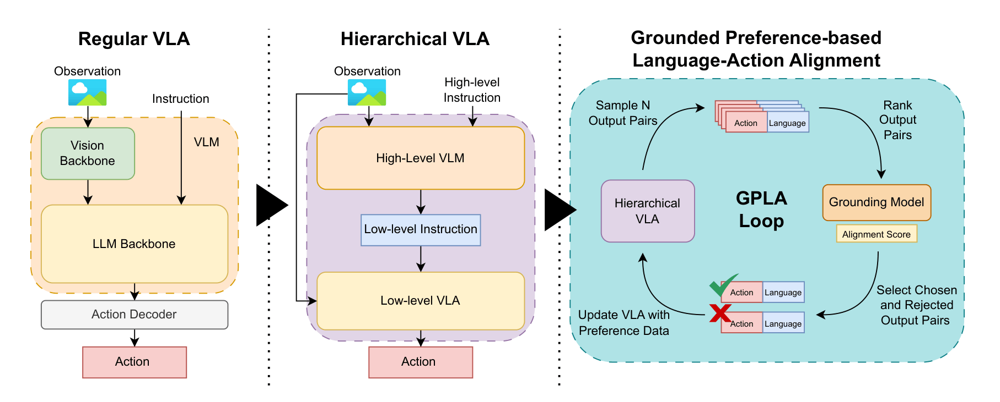
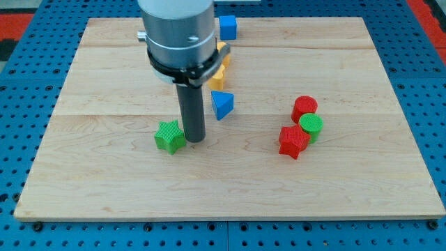
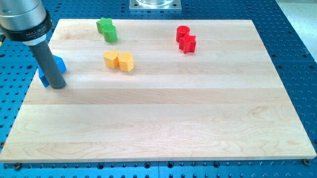
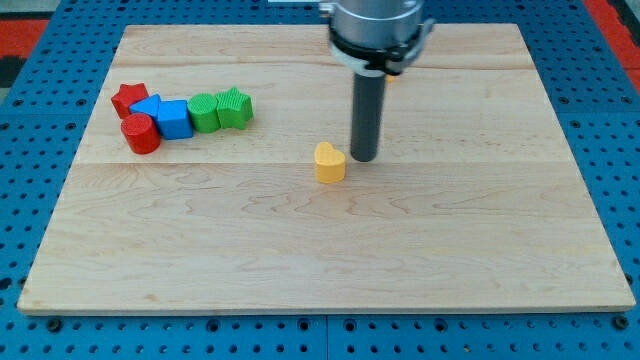
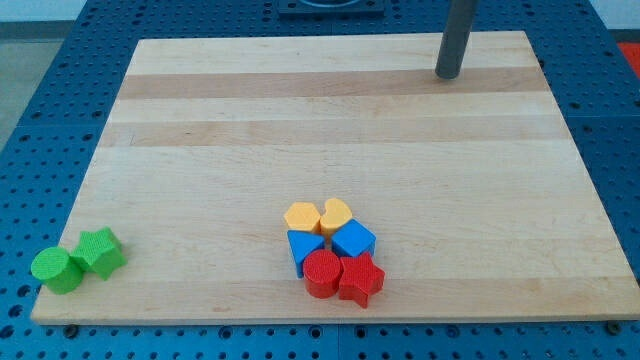

Abstract
Achieving robot transparency is a critical step toward effective human-robot collaboration. To be transparent, a robot's natural language communication must be consistent with its actions and explicitly grounded in the task and environment.
Existing hierarchical Vision-Language-Action (VLA) models can generate language (e.g., through chain-of-thought) and low-level actions. However, current work does not consider explicit alignment between these modalities during training.
To address this crucial gap, we propose a novel training framework that explicitly grounds hierarchical VLA sub-task descriptions with respect to the visual observation and action space. Our framework uses a contrastive model to assess the alignment between generated language and corresponding action trajectories. This contrastive model enables direct ranking of different language-trajectory pairs based on their alignment, allowing us to refine the grounding of our hierarchical VLA through offline preference learning.
We apply our framework to the LanguageTable dataset, a benchmark dataset of human language-annotated trajectories, and provide critical insights into multimodal grounding representations, all while establishing a strong baseline that achieves performance comparable to fully supervised fine-tuning and minimizing the need for costly data annotations.
Method Overview
GPLA extends a standard VLA into a hierarchical VLA by integrating a high-level VLM (Gemma 3) that decomposes high-level instructions into executable low-level sub-tasks, paired with a low-level VLA (SmolVLA) that generates action trajectories.
A separately trained Action-Conditioned Grounding Model extends SigLIP 2 by conditioning visual features on encoded action trajectories via FiLM layers. This model scores the alignment of each language-action pair using a symmetric InfoNCE loss, enabling preference pairs to be automatically constructed without additional human annotation.
The high-level VLM is then updated using SimPO preference optimisation on these pairs, iteratively steering the model toward more grounded and semantically accurate sub-task descriptions.

Figure 1. We extend a regular VLA into a hierarchical VLA, then iteratively align the intermediate language and action outputs using a learned grounding model and preference-based optimisation.
Contributions
- 01 We propose GPLA, a novel preference-learning framework that explicitly grounds the intermediate language outputs of hierarchical VLAs with visual observations and actions, potentially eliminating the need for expensive annotation of sub-task labels.
- 02 GPLA achieves performance comparable to fully supervised fine-tuning on the LanguageTable manipulation benchmark, while uniquely supporting low-data regimes.
- 03 Visual analysis of the embedding space shows that our action-conditioned grounding model improves cross-modal alignment, mapping action-vision and text inputs into overlapping embedding regions unlike standard CLIP or SigLIP 2.
Results
Table 2 · Qualitative Examples on the LanguageTable Dataset
 |
 |
 |
 |
|
|---|---|---|---|---|
| High-level Instructions | make a "parallelogram" shape out of all the blocks | put all the blocks in the bottom left corner | put all the blocks in the center left | put all the blocks in a horizontal line on the bottom of the board |
| Low-level Instructions (GT) | move the green star diagonal to the hexagon | move the blue blocks towards the bottom left | keep the yellow heart at the bottom right side of the green star | move the blue blocks towards the bottom left |
| Supervised | move your arm towards the left below the yellow heart | push the yellow hexagon into your hand | set down the heart | slide the blue cube slightly towards the left and the right of the blue triangle |
| GPLA (Action-Conditioned) | place hexagon above square | move your arm towards yellow star | move your arm towards front of the board | place your arm towards towards left side |
| Supervised + GPLA (Action-Conditioned) | push the red circle diagonally to the triangle | move yellow hexagon into red star | drag red circle to the yellow hexagon | push blue cube diagonally above green circle |
BibTeX
Acknowledgements
This work was funded by the EU and UKRI under Horizon Europe, MSCA grant agreement No 101072488 (TRAIL). The authors thank the Computational Shared Facility at the University of Manchester for providing the compute resources used to train all models.